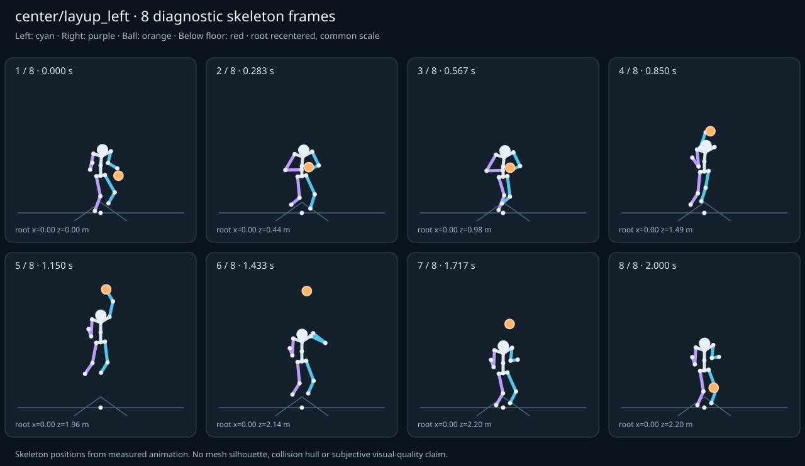

מה הוריד את הציון
- קפיצות פוזה: RightHand בזמן 0.5833 ש׳; קפיצת סיבוב שקולה 122.7839 מעלות ב־60Hz (אדום)
- כניסה ויציאה מול המתנה: פער ב־כניסה מול המתנה; יחס חריגה 3.4809 (אדום)
כיסוי: 100%. לא כל מדד חל על כל קליפ; הסטטוס והראיות מפורטים למטה.
שמונה פריימים
תצוגת שלד אבחונית שנבנתה מהפריימים הנמדדים. צד שמאל בכחול, ימין בסגול, כדור בכתום. מיקום השורש ממורכז לצפייה; מיקומו בעולם כתוב בכל פריים.

המדדים והראיות
| מדד | מצב | ערך | ציון | סף ופרטי מדידה |
|---|---|---|---|---|
| החלקת רגליים | ירוק | 0 height ratio | 99 | {
"definition": {
"label": "החלקת רגליים",
"unit": "height ratio",
"green": 0.01,
"yellow": 0.035,
"weight": 18,
"description": "Maximum horizontal sole displacement from the first sample of each declared support window, divided by character height. Inferred support is used only when no windows were supplied."
},
"value": 0.000374,
"status": "green",
"score": 99.25,
"evidence": {
"coordinateSpace": "native GLB external Motion node (applied once)",
"supportSource": "declared",
"windows": 5,
"samples": 79,
"maxDriftMeters": 0.000778,
"p95SpeedMetersPerSecond": 0.01303,
"worst": {
"bone": "RightFoot",
"t": 0.716667,
"start": 0.6,
"end": 0.8,
"driftMeters": 0.000778
}
}
} |
| חדירה לרצפה | ירוק | 0.001 height ratio | 95 | {
"definition": {
"label": "חדירה לרצפה",
"unit": "height ratio",
"green": 0.005,
"yellow": 0.02,
"weight": 15,
"description": "Maximum depth of the supplied sole probe points and all skeletal joint centers below the declared floor plane, divided by height. Sole probes are not a mesh collision audit."
},
"value": 0.001228,
"status": "green",
"score": 95.09,
"evidence": {
"samples": 2420,
"floorY": 0,
"probeKind": "declared sole probes plus skeletal joint centers (no mesh surfaces)",
"maxDepthMeters": 0.002555,
"worst": {
"t": 0.75,
"bone": "RightFoot",
"depthMeters": 0.002555,
"y": -0.002555
}
}
} |
| קפיצות פוזה | אדום | 8.186 discontinuity ratio | 0 | {
"definition": {
"label": "קפיצות פוזה",
"unit": "discontinuity ratio",
"green": 1,
"yellow": 2.5,
"weight": 18,
"description": "Maximum adjacent 60 Hz-equivalent step: root-relative marker displacement / 0.04 height, root-relative rotation / 15 degrees, or root translation / 0.08 height. A fast continuous action can also exceed this screening threshold."
},
"value": 8.185593,
"status": "red",
"score": 0,
"evidence": {
"adjacentPairs": 120,
"observations": 2040,
"maxDegrees60Hz": 122.783899,
"maxMarkerStepHeight60Hz": 0.15603,
"maxRootStepHeight60Hz": 0.026042,
"worst": {
"ratio": 8.185593275806415,
"t": 0.583333,
"previousTime": 0.566667,
"bone": "RightHand",
"markerStepHeight60Hz": 0.111401,
"degrees60Hz": 122.783899
}
}
} |
| חריגות אנטומיות | ירוק | 0 % affected frames | 100 | {
"definition": {
"label": "חריגות אנטומיות",
"unit": "% affected frames",
"green": 0.5,
"yellow": 3,
"weight": 14,
"description": "Percentage of frames with elbow or knee flexion above 165 degrees, neck bend above 80 degrees, or a segment length changing by more than 5%. Optional calibrated hinge checks detect reverse knee flexion above 8 degrees. Conservative marker limits do not diagnose axial joint twist."
},
"value": 0,
"status": "green",
"score": 100,
"evidence": {
"testedFrames": 121,
"affectedFrames": 0,
"checks": 2057,
"maxLimbFlexionDegrees": 164.763856,
"maxRelativeSegmentLengthChange": 0,
"hingeDirectionChecked": true,
"axialTwistChecked": false,
"violations": []
}
} |
| מגע בכדור | ירוק | 0.013 height ratio | 83 | {
"definition": {
"label": "מגע בכדור",
"unit": "height ratio",
"green": 0.015,
"yellow": 0.05,
"weight": 13,
"description": "Maximum absolute distance from the ball surface to the sampled, bone-transformed declared contact point, divided by height. Events are evaluated at their exact declared times by interpolation."
},
"value": 0.012851,
"status": "green",
"score": 82.87,
"evidence": {
"radiusMeters": 0.12,
"samples": 91,
"missed": [],
"contacts": [
{
"t": 0.583333,
"bone": "LeftHand",
"gapMeters": 0.02673,
"signedGapMeters": -0.02673,
"centerDistanceMeters": 0.09327,
"contactPoint": [
0.087679,
1.252667,
1.344373
],
"ballCenter": [
0,
1.280044,
1.360569
],
"declaredLocalPoint": true
},
{
"t": 0.183333,
"bone": "LeftHand",
"gapMeters": 0.023816,
"signedGapMeters": -0.023816,
"centerDistanceMeters": 0.096184,
"contactPoint": [
0.212758,
1.211751,
0.677676
],
"ballCenter": [
0.17,
1.130924,
0.64784
],
"declaredLocalPoint": true
},
{
"t": 0.116667,
"bone": "LeftHand",
"gapMeters": 0.002166,
"signedGapMeters": -0.002166,
"centerDistanceMeters": 0.117834,
"contactPoint": [
0.337702,
0.920549,
0.492788
],
"ballCenter": [
0.34,
0.802739,
0.49216
],
"declaredLocalPoint": true
},
{
"t": 0.05,
"bone": "LeftHand",
"gapMeters": 0.002132,
"signedGapMeters": -0.002132,
"centerDistanceMeters": 0.117868,
"contactPoint": [
0.337748,
0.921458,
0.376715
],
"ballCenter": [
0.34,
0.803614,
0.376111
],
"declaredLocalPoint": true
},
{
"t": 0.016667,
"bone": "LeftHand",
"gapMeters": 0.002028,
"signedGapMeters": -0.002028,
"centerDistanceMeters": 0.117972,
"contactPoint": [
0.335905,
1.040196,
0.352654
],
"ballCenter": [
0.34,
0.922398,
0.347716
],
"declaredLocalPoint": true
},
{
"t": 0.15,
"bone": "LeftHand",
"gapMeters": 0.002008,
"signedGapMeters": -0.002008,
"centerDistanceMeters": 0.117992,
"contactPoint": [
0.335878,
1.038791,
0.570081
],
"ballCenter": [
0.34,
0.920981,
0.565
],
"declaredLocalPoint": true
},
{
"t": 0.783333,
"bone": "LeftHand",
"gapMeters": 0.001341,
"signedGapMeters": 0.001341,
"centerDistanceMeters": 0.121341,
"contactPoint": [
0.031523,
1.738453,
1.527612
],
"ballCenter": [
0.021394,
1.835269,
1.600053
],
"declaredLocalPoint": true
},
{
"t": 0.75,
"bone": "LeftHand",
"gapMeters": 0.001094,
"signedGapMeters": 0.001094,
"centerDistanceMeters": 0.121094,
"contactPoint": [
0.028786,
1.587818,
1.464929
],
"ballCenter": [
0.015213,
1.684565,
1.53648
],
"declaredLocalPoint": true
},
{
"t": 0.85,
"bone": "LeftHand",
"gapMeters": 0.000847,
"signedGapMeters": -0.000847,
"centerDistanceMeters": 0.119153,
"contactPoint": [
0.048309,
2.071622,
1.669862
],
"ballCenter": [
0.035,
2.167022,
1.74
],
"declaredLocalPoint": true
},
{
"t": 0.683333,
"bone": "LeftHand",
"gapMeters": 0.000744,
"signedGapMeters": -0.000744,
"centerDistanceMeters": 0.119256,
"contactPoint": [
0.017648,
1.34927,
1.363333
],
"ballCenter": [
0.005341,
1.443842,
1.434933
],
"declaredLocalPoint": true
},
{
"t": 0.883333,
"bone": "LeftHand",
"gapMeters": 0.000744,
"signedGapMeters": -0.000744,
"centerDistanceMeters": 0.119256,
"contactPoint": [
0.057693,
2.24048,
1.741525
],
"ballCenter": [
0.041927,
2.335933,
1.811253
],
"declaredLocalPoint": true
},
{
"t": 0.65,
"bone": "LeftHand",
"gapMeters": 0.000552,
"signedGapMeters": -0.000552,
"centerDistanceMeters": 0.119448,
"contactPoint": [
0.01733,
1.27066,
1.331687
],
"ballCenter": [
0.002147,
1.365961,
1.40208
],
"declaredLocalPoint": true
},
{
"t": 0.916667,
"bone": "LeftHand",
"gapMeters": 0.000496,
"signedGapMeters": -0.000496,
"centerDistanceMeters": 0.119504,
"contactPoint": [
0.065799,
2.403086,
1.810454
],
"ballCenter": [
0.048606,
2.498775,
1.879947
],
"declaredLocalPoint": true
},
{
"t": 0.716667,
"bone": "LeftHand",
"gapMeters": 0.000412,
"signedGapMeters": 0.000412,
"centerDistanceMeters": 0.120412,
"contactPoint": [
0.022412,
1.456174,
1.408863
],
"ballCenter": [
0.009779,
1.552066,
1.480587
],
"declaredLocalPoint": true
},
{
"t": 0.816667,
"bone": "LeftHand",
"gapMeters": 0.00031,
"signedGapMeters": 0.00031,
"centerDistanceMeters": 0.12031,
"contactPoint": [
0.036642,
1.901715,
1.597271
],
"ballCenter": [
0.028073,
1.998111,
1.668747
],
"declaredLocalPoint": true
},
{
"t": 0.95,
"bone": "LeftHand",
"gapMeters": 0.000296,
"signedGapMeters": -0.000296,
"centerDistanceMeters": 0.119704,
"contactPoint": [
0.072716,
2.553652,
1.874061
],
"ballCenter": [
0.054787,
2.64948,
1.94352
],
"declaredLocalPoint": true
},
{
"t": 0.983333,
"bone": "LeftHand",
"gapMeters": 0.000161,
"signedGapMeters": -0.000161,
"centerDistanceMeters": 0.119839,
"contactPoint": [
0.078377,
2.686098,
1.929853
],
"ballCenter": [
0.060221,
2.781978,
1.999413
],
"declaredLocalPoint": true
},
{
"t": 0.616667,
"bone": "LeftHand",
"gapMeters": 0.00014,
"signedGapMeters": -0.00014,
"centerDistanceMeters": 0.11986,
"contactPoint": [
0.018043,
1.228575,
1.314895
],
"ballCenter": [
0.000446,
1.324492,
1.384587
],
"declaredLocalPoint": true
},
{
"t": 1.016667,
"bone": "LeftHand",
"gapMeters": 0.000078,
"signedGapMeters": -0.000078,
"centerDistanceMeters": 0.119922,
"contactPoint": [
0.08275,
2.794301,
1.975375
],
"ballCenter": [
0.064659,
2.890203,
2.045067
],
"declaredLocalPoint": true
},
{
"t": 0.6,
"bone": "LeftHand",
"gapMeters": 0.000066,
"signedGapMeters": -0.000066,
"centerDistanceMeters": 0.119934,
"contactPoint": [
0.018,
1.217619,
1.3104
],
"ballCenter": [
0,
1.313619,
1.38
],
"declaredLocalPoint": true
}
],
"contactDetailsTruncated": true,
"coordinateSpace": "native GLB external Motion node (applied once)"
}
} |
| כניסה ויציאה מול המתנה | אדום | 3.481 continuity ratio | 46 | {
"definition": {
"label": "כניסה ויציאה מול המתנה",
"unit": "continuity ratio",
"green": 1,
"yellow": 3,
"weight": 10,
"description": "Worst entry/exit mismatch to the best matching idle phase: RMS marker error / 0.04 height, RMS bone rotation / 25 degrees, or RMS endpoint velocity error / 0.75 height per second. Horizontal root translation is aligned; root height and body pose remain measurable."
},
"value": 3.480944,
"status": "red",
"score": 45.99,
"evidence": {
"entry": {
"ratio": 3.480943726392969,
"t": 0,
"idleTime": 0,
"markers": 17,
"rmsPositionHeight": 0.139238,
"rmsRotationDegrees": 48.531725,
"rmsVelocityHeightPerSecond": 0.723428,
"velocityEvaluated": true
},
"exit": {
"ratio": 3.3329277057810502,
"t": 2,
"idleTime": 0,
"markers": 17,
"rmsPositionHeight": 0.133317,
"rmsRotationDegrees": 45.011223,
"rmsVelocityHeightPerSecond": 0.045073,
"velocityEvaluated": true
},
"worstEndpoint": "entry",
"alignment": "horizontal root translation; raw asset poses used when provided"
}
} |
| מהירות גוף מול צעדים | לא חל | — relative speed error | — | {
"definition": {
"label": "מהירות גוף מול צעדים",
"unit": "relative speed error",
"green": 0.2,
"yellow": 0.5,
"weight": 8,
"description": "Relative difference between average root travel speed and the median backward support-foot sweep speed relative to the root. Cadence and implied stride lengths are also reported. In-place clips need an explicit reference travel scenario; stationary actions are not scored as locomotion."
},
"value": null,
"status": "not-applicable",
"score": null,
"reason": "This action is not declared locomotion.",
"evidence": {}
} |
| סימטריה | ירוק | 0 relative mismatch | 100 | {
"definition": {
"label": "סימטריה",
"unit": "relative mismatch",
"green": 0.03,
"yellow": 0.1,
"weight": 4,
"description": "Maximum bilateral segment-length mismatch. Looping locomotion additionally compares reflected half-cycle leg markers; explicit pose symmetry compares simultaneous bilateral markers. One-sided actions retain unscored motion diagnostics, so a valid kick or dribble arm is not penalized for intentional asymmetry."
},
"value": 0.000007,
"status": "green",
"score": 100,
"evidence": {
"mode": "mirrored clip pair",
"modeSource": "structural default for intentional asymmetry",
"structuralMismatch": 0,
"segments": [
{
"segment": "Arm-ForeArm",
"mismatch": 0
},
{
"segment": "ForeArm-Hand",
"mismatch": 0
},
{
"segment": "UpLeg-Leg",
"mismatch": 0
},
{
"segment": "Leg-Foot",
"mismatch": 0
}
],
"motionRmsHeight": 0.000007,
"worstMotion": {
"t": 1.466667,
"errorHeight": 0.000012
},
"bilateralPoseRmsHeightUnscored": 0.156039,
"note": "One-sided authored actions are checked for structural symmetry only."
}
} |